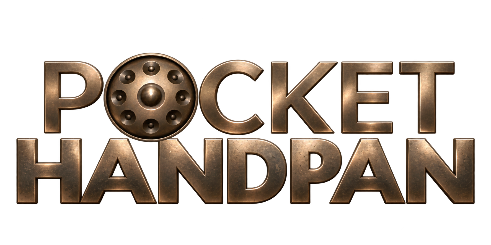

Settings
Show centre and shoulder zones
Show or hide note labels
Background nature sound
Metronome90 BPM
Shaker pulse
Feel
Accent beats
Real egg-shaker sample · tap beat numbers to accent them
Tap a note centre, shoulder or the shell
For best response on iPad, open in Safari and add to Home Screen.